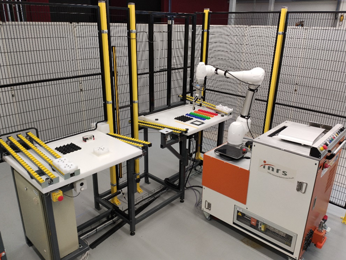

L'étude ISARC
Comment guider l'intégrateur dans le choix de moyen de prévention ?
Dans le cadre de ses travaux sur la prévention des risques liés à la
robotique, le laboratoire
SETA de
l’INRS mène une étude intitulée ISARC (Intégration Sûre d’Application Robotique
Collaborative). Cette
étude vise à mieux accompagner les entreprises qui souhaitent intégrer des robots collaboratifs dans
leur environnement de travail. Contrairement aux robots industriels classiques encagés, ces robots
partagent un espace avec les opérateurs humains. Leur intégration doit donc se faire dans des conditions
strictes pour garantir la sécurité des travailleurs.
L’approche classique des intégrateurs consiste généralement à considérer un robot et ses équipements sans aucune protection. Suite à l’analyse des risques, des protections (comme des barrières ou capteurs) sont ajoutées dans les situations identifiées comme dangereuses. L’étude ISARC propose une démarche inverse : partir d’un périmètre entièrement protégé autour de l’application robotique, par des protecteurs fixes (ex: grillages). On crée ensuite des ouvertures spécifiques uniquement là où des tâches nécessitent l’accès d’un opérateur humain dans l’espace de travail du robot (ex: collaboration avec le robot). Chaque ouverture doit alors faire l’objet d’une analyse rigoureuse, pour s’assurer qu’elle ne génère pas de risques non maîtrisés. Pour chaque ouverture générant des risques, au moins un moyen de prévention doit y être associé.
Pour structurer cette démarche, les chercheurs de l’INRS ont conçu une méthode sous la forme d’un arbre de décision. Cet outil permet d’évaluer, étape par étape, les tâches réalisées dans la cellule, les interactions homme-robot, et les mesures de prévention à appliquer. L’arbre s’appuie sur les normes de sécurité en vigueur, notamment la norme NF EN ISO 12100 pour l’évaluation des risques machine, et NF EN ISO 10218-2 pour les exigences spécifiques aux applications robotiques collaboratives. Il permet également de guider le choix entre différentes solutions techniques.
Qu'est-ce qu'un robot collaboratif ?
Un robot collaboratif est un bras articulé énergisé, plus ou moins autonome, conçu pour travailler à
proximité des opérateurs ou en relation directe avec eux.
Cette co-activité implique la suppression
totale ou partielle des barrières physiques entre l'homme et le robot afin qu'ils puissent intéragir.

Les robots collaboratifs sont-ils sûrs ?
La mise en oeuvre de robots, quels qu'ils soient, génère un nombre important de risques liés au robot
lui-même mais aussi au procédé , à l'outil utilisé et à la pièce manipulée.
Parmi ces risques, on
distingue les chocs et les écrasements ainsi que les risques électriques, thermiques et liés à
l'exposition aux vibrations et aux poussières.
Or, si en robotique classique la majorité de ces
risques
est maîtrisée par des barrières de protection matérialisées, ce n'est pas le cas des robots
collaboratifs conçus pour travailler à proximité des opérateurs.
Les robots collaboratifs travaillent-ils avec l'opérateur ?
L'homme et le robot collaboratif travaillent en lien l'un avec l'autre, à des degrés d'interaction différents. On distingue trois types de collaboration possibles :
- Le partage d'espace de travail, lorsque l'homme et le robot concourent à la réalisation de tâches distinctes dans un même environnement physique.
- La collaboration directe, lorsque l'homme et le robot travaillent simultanément à la réalisation d'une tâche commune.
- La collaboration indirecte, lorsque l'homme et le robot travaillent tour à tour à la réalisation d'une tâche commune.
Partage d'espace de travail
Vidéo illustrant un partage d'espace de travail entre le robot et l'opérateur.
Collaboration indirecte
Vidéo illustrant une collaboration indirecte entre le robot et l'opérateur.
Collaboration directe
Vidéo illustrant une collaboration directe entre le robot et l'opérateur.